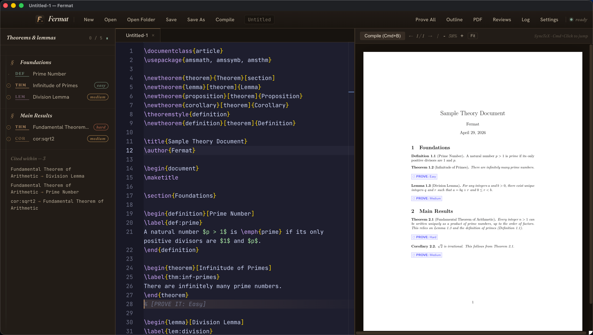

A LaTeX editor that reads your definitions, drafts rigorous proofs with Claude, and — when you want certainty — formally verifies them in Lean 4.
macOS · Windows · Linux — MIT license
Cuius rei demonstrationem mirabilem sane detexi,
hanc marginis exiguitas non caperet.
— Pierre de Fermat, 1637, in the margin of Diophantus's Arithmetica
MDCXXXVII · MMXXVI
Three hundred and eighty-nine years later,
the margin is large enough.

Fermat treats proof-writing as a first-class workflow, not a chat interface. Every feature is designed around the LaTeX document you're already writing.
A Monaco-powered editor with LaTeX syntax highlighting, auto-closing environments, and live PDF preview with SyncTeX. Cmd+click anywhere in the PDF to jump to the source line — and vice versa.
Mark a theorem with % [PROVE IT: Hard]. Claude runs a three-phase
pipeline — sketch the approach, prove it rigorously, then
verify the result. Context-aware: it reads your definitions and prior lemmas.
Optional formal verification. Fermat translates the natural-language proof into
Lean 4, fills each sorry, and type-checks the whole thing. If Lean
accepts it, your proof is machine-verified — not just plausible.
Inline auto-completion that understands LaTeX — environments, references,
citations, math symbols — all with Cursor-style ergonomics.
Cmd+K inserts a proof marker; Cmd+' forward-searches
to the PDF.
Fermat watches your document for [PROVE IT: …]
markers. Easy proofs auto-inline. Medium and Hard proofs land in a review panel
where you can read, edit, and accept — or reject — before they touch your document.
\begin{theorem}[Erdős–Sárközy–Szemerédi] \label{thm:erdos-1196} For every primitive $A \subseteq [x, \infty)$, $\sum_{a \in A} \frac{1}{a \log a} \leq 1 + O(1/\log x)$. \end{theorem} % [PROVE IT: Hard] ← Fermat queues a three-phase proof task % SKETCH: Reduce to a critical family parametrised by the % anatomy-of-integers Markov structure (Price 2026). ┌──────────────────────────────────────────────────────────┐ │ 1. fermat-sketch — plan the strategy │ 2. fermat-prove — write the \begin{proof}…\end{proof} │ 3. fermat-verify — judge correctness; retry on failure │ 4. lean-4 — optional formal verification ✓ └──────────────────────────────────────────────────────────┘
Click Submit All in the toolbar. Easy proofs appear instantly inline. Hard proofs wait for your review — with the generated LaTeX, the sketch, and the verdict all visible before anything is written to your file.
Finally.
Had I Fermat in 1666, Leibniz would still be in my footnotes. The calculus would bear a single name.
I produced eight hundred papers with one eye. Think what I'd have managed with autocomplete.
Pauca sed matura. Fewer, riper — and now with auto-completion.
The goddess Namagiri still dictates the formulas. The review panel merely checks them.
God does not play dice. But apparently He does run Lean 4.
※Selected early-access testimonials.
Get notified when the first public release drops, and help shape what ships next. No drip campaigns, no spam.
No spam · unsubscribe any time